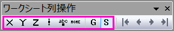

すべてのワークシートの列は列属性（別名プロット属性）を持ちます。列属性は、プロットおよび分析操作中に列内のデータをどのように扱うかを決定します。
たとえば、デフォルトのOriginワークシートには、 "X"と "Y"の列が1つずつあります。これら2つの列に含まれるデータを選択し、（次の表で説明する理由でY列を選択する必要がある場合は、X、Y、Z：を参照）、プロットツールバーボタン（例：散布図  ボタン）をクリックします。 どの列のデータをX軸に対してプロットし、どの列をY軸に対してプロットするかを決定します。
ボタン）をクリックします。 どの列のデータをX軸に対してプロットし、どの列をY軸に対してプロットするかを決定します。
既存のワークシートに列属性を適用するには、まずワークシート列を選択してから、
また、列の属性は、ファイルのインポート時、作図のセットアップダイアログでグラフを作成する際、各種解析ダイアログでデータ範囲を選択する際、あるいは新規ワークブックダイアログでワークシートを作成する際にも設定することができます。
Originでは、ワークシートの列データに対して、次の9種類の列属性を設定できます：X, Y, Z, Xエラー, Yエラー, ラベル, グループ, サブジェクト（ANOVAおよび一部の統計解析で使用）、および無属性。
| X, Y, Z: |
1つのX列が指定されているワークシートでは、そのX列が、ワークシート内のすべてのY列（左右両側）およびZ列（右側のみ）に対してX値を提供します。 複数のX列が指定されているワークシートでは、各X列は、その右側にあるY列およびZ列（ただし、次のX列より左側にある列のみ）に対してX値を提供します。非連続の列を選択した場合は、選択されたX列が、選択されたY列およびZ列に対してX値を提供します。選択範囲にX列が含まれていない場合、Originは選択されたY列またはZ列の左側にある最初のX列を使用します。該当するX列が存在しない場合は、選択されたY列の右側からX列を探します（Z列に対しては右側のX列は参照されません）。 Note: ワークシートにX列が指定されていない場合は、列：サンプリング間隔を設定で等間隔の値を作成し、列：X列を表示で表示することができます。 | |
|---|---|---|
| Xエラー |
1つのX列が指定されているワークシートでは、Xエラー列の値は、ワークシート内の列位置に関係なくX誤差の大きさを設定します。 複数のX列が指定されている場合、Xエラー列の値は、その左側にある最初のX列に対するX誤差の大きさを設定します。該当するX列がない場合は、右側のX列が使用されます。非連続の列を選択した場合は、選択されたXエラー列が、選択されたX列に対してXエラー値を提供します。 複数のX列が選択されている場合は、左側の選択済みX列が優先され、存在しない場合は右側が使用されます。選択範囲にX列が含まれていない場合、OriginはXエラー列の左側にある最初のX列を使用し、存在しない場合は右側のX列を使用します。該当するX列がない場合は、右側のX列が使用されます。 | |
| Yエラー |
Yエラー列の値は、その左側にある最初のY列に対するY誤差の大きさを設定します。非連続の列を選択した場合は、選択されたYエラー列が、Yエラー列の左側で最も近い選択済みY列に対してY誤差値を提供します。 | |
| ラベル |
ラベル列のテキストまたは数値は、その直左にあるY列のデータ値のラベルとして使用されます。非連続の列を選択した場合は、選択されたラベル列が、選択されたY列のデータラベルとして使用されます。複数のY列が選択されている場合は、左側で最も近い列に関連付けられます。
| |
| グループ |
選択した列を、列の統計やANOVAツールなどで使用するグループまたは因子列として指定します。 | |
| カテゴリ |
選択した列を、繰り返しのあるANOVAにおけるサブジェクト列として指定します。 | |
| 無属性 |
無属性に設定された列は、ワークシートで選択されていてもプロットされません。なしと同じです。 |
選択した列に列属性を設定すると、列のショートネームの後ろに、括弧付きの属性記号が列ヘッダに表示されます。 （なお、無属性（なし）に設定された列は、ショートネームのみが表示されます。）
前述のように、ファイルインポートダイアログ（インポートウィザードなど）で、または新規ワークブックダイアログで、新しいワークシートを作成するときに、属性を設定することができます。これらのダイアログ内のリストコントロールでは、通常ワークシートの列ヘッダーに表示されるものと同じ属性記号が使用されますが、エラー列および無属性列については例外があります。
| 属性 | 列ヘッダの記号 | リストコントロールの記号 |
|---|---|---|
| X列 | X | X |
| Y列 | Y | Y |
| Z列 | Z | Z |
| Xエラー | xEr± | M |
| Yエラー | yEr± | E |
| ラベル | L | L |
| グループ | G | G |
| カテゴリ | S管理図 | S管理図 |
| なし（無属性） | N |
上記の属性記号を使用して、ユーザ定義または既存のパターンを指定することで、複数列に対して一括で列属性を設定できます。（例：coldesigダイアログや、新規ワークブックダイアログのワークシート作成タブタブ）
括弧で囲まれたパターンは、ワークシートの最後の列まで繰り返して適用されます。また、括弧の前に数値N を付ける、または単一の属性記号の前にN を付けることで、そのパターンまたは記号をN 回適用することができます。例えば、(XY)を選択すると、列のプロット属性は"XYXYXY..."の繰り返しパターンに設定されます。3(XY)を指定すると、プロット属性は"XYXYXY"に設定されます。この場合、ワークシートの列数が6を超える場合、残りの列はすべてYとして指定されます（例： "XYXYXYYYYY ..."）
データをインポートする際、インポートダイアログ（インポートウィザードを含む）のオプションでインポートデータの列の属性を設定できます。ドロップダウンリストから前もって作成したパターンを選択したり、属性を入力できます。
データをインポートする前に新規ワークブックダイアログ （ファイル：新規作成：ワークブックメニューを選択して開く）を使用して新規ワークシートを作成する場合、同様の列属性コンボボックスを使用して新規ワークシートの列属性を設定できます。
| Note: Originファイルインポートにデータコネクタを使う場合、アクティブシートの列属性は、インポートデータの属性設定に従って変更されます。OriginデータのインポートにSQLクエリを使う場合は例外で、アクティブシートの列属性の設定が保持されます。 |
データをワークシートにインポートし、複数列として配置した後、列属性はさまざまな方法で設定できます。
1つの列を選択している場合、その列を右クリックし、コンテキストメニューの列XY属性の設定から列属性を設定できます。
複数の列を選択している場合は、右クリックして列XY属性の設定から単一の列属性、または「XY」のようなパターンを選択できます。選択した列属性またはパターンは、最後の列まで繰り返し適用されます。例えば、「XY」を選択すると、対象列の列属性は「XYXYXY…」のように設定されます。さらに、列XY属性の設定: カスタムを選択すると、カスタムダイアログが表示されます。
このダイアログは、選択した列にユーザ定義の属性パターンを指定するために使用できます。
列ツールバーにあるボタンを使って、選択した列の列XY属性を設定できます。

列を選択し、右クリックしてコンテキストメニューからプ列フォーマット...を選択します。列プロパティダイアログのプロパティタブが開きます。ここで列のXY属性ドロップダウンリストから列属性を設定できます。
デフォルトでは、作図や解析のために元データを選択すると、ワークシートの列に事前設定された列属性が使用されます。また、インタラクティブなデータ選択コントロールを使用して、現在の処理に対して列属性を個別に指定し、既存の設定を無視することも可能です。
作図のセットアップダイアログでは、元データを選択し、目的のプロットタイプを選んだ後、中央パネルで列属性を指定できます。ここでは、デフォルト指定モードとカスタム指定モードの2つの表示モードを使用できます。
デフォルト指定モードを設定すると、ワークシート列のXY属性が使われます。また、カスタム指定モードでは、列の前のチェックボックスを使って、XY属性を設定します。（X、Y、Z、ラベル、Xエラーバー、Yエラーバーなど）
詳細については、このヘルプページを参照してください。
多くの解析ダイアログでは、元のワークシートで列属性が設定されているかどうかに関係なく、インタラクティブ範囲選択ボタン 、右向き三角ボタン
、右向き三角ボタン を使用して、対象の入力データ要素に対して、ワークシート/グラフ/コンテキストメニューから必要な列を選択することができます。
を使用して、対象の入力データ要素に対して、ワークシート/グラフ/コンテキストメニューから必要な列を選択することができます。
入力データの選択に関する詳細については、入力データを指定をご参照ください。
ヘッダにY列インデックスを表示するには： デフォルトでは、Y列の数が12以上の場合、列ヘッダのYの横に列インデックスが表示されます。
この表示条件となる列数は、システム変数@MYC によって変更することができます。
|